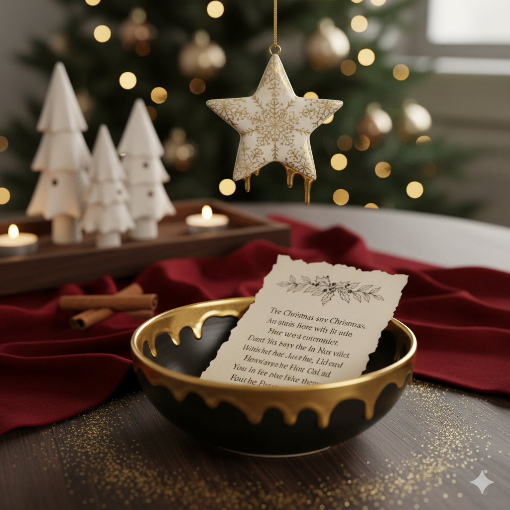
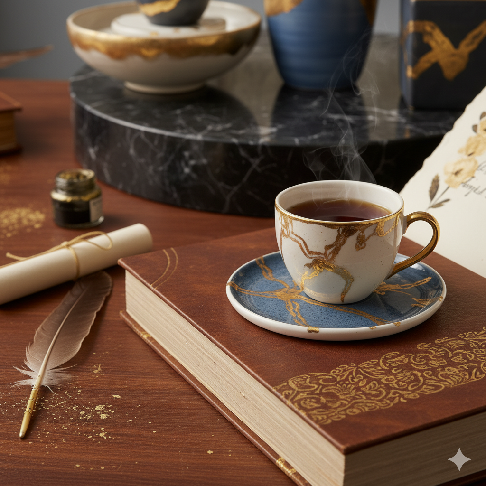

Zeichnung
Linie & Form
Zeichnung & Grafik
Der erste Strich entscheidet alles
Zeichnungen entstehen bei Silvia aus dem Moment heraus — ohne Vorstudie, ohne Korrekturgummi. Die Linie kennt nur vorwärts. Was bleibt, ist Spur: Druck, Geschwindigkeit, Zögern.
Neben freien Zeichnungen entstehen druckgrafische Arbeiten: Monotypien, Linolschnitte, gelegentlich Siebdruck. Die Auflage ist immer gering, jedes Blatt einzeln betrachtet und von Hand signiert.
Originale und Drucke können auf Anfrage erworben werden.

Originale & Drucke
Aus dem Zeichenatelier
Linolschnitt
Negative Fläche

Monotypie
Atelier 03
Bleistift
Feldskizze
Siebdruck
Schicht um Schicht
Tusche
Bergkontur
„Zeichnen ist DenkenSilvia Föger
mit dem Stift in der Hand."